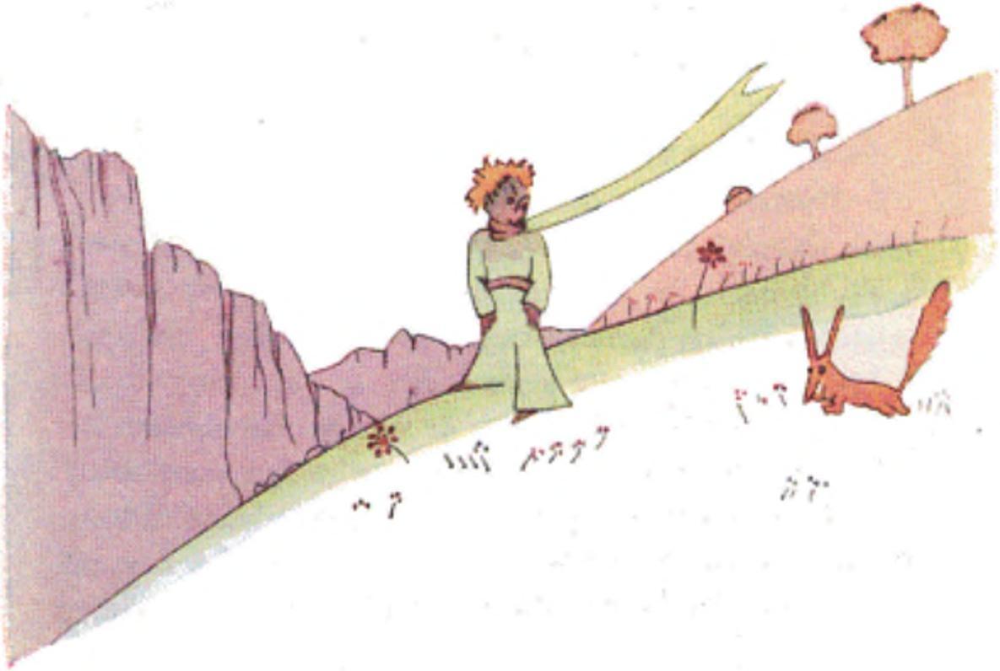

most dreadfully, and she would pretend that she was dying, to avoid being laughed at. And I should be obliged to pretend that I was nursing her back to life, for if I did not do that, to humble myself also, she would really allow herself to die...” Then he went on with his reflections: “I thought that I was rich, with a flower that was unique in all the world; and all I had was a common rose. A common rose, and three volcanoes that come up to my knees — and one of them perhaps extinct forever... that doesn’t make me a very great prince...” And he lay down in the grass and cried. It was then that the fox appeared. “Good morning,” said the fox. “Good morning,” the little prince responded politely, although when he turned around he saw nothing. “I am right here,” the voice said, “under the apple tree.” “ Who are you?” asked the little prince, and added, “You are very pretty to look at.” “I am a fox,” said the fox. “Come and play with me,” proposed the little prince. “I am so unhappy.” “I cannot play with you,” the fox said. “I am not tamed.” “Ah! Please excuse me,” said the little prince. But, after some thought, he added: “What does that mean, ‘tame’?” “You do not live here,” said the fox. “What is it that you are looking for?” “I am looking for men,” said the little prince. “What does that mean, ‘tame’?” “Men,” said the fox. “They have guns, and they hunt. It is very disturbing. They also raise chickens. These are their only interests. Are you looking for chickens?” “No,” said the little prince. “I am looking for friends. What does that mean, ‘tame’?” “It is an act too often neglected,” said the fox. It means to establish ties.”
